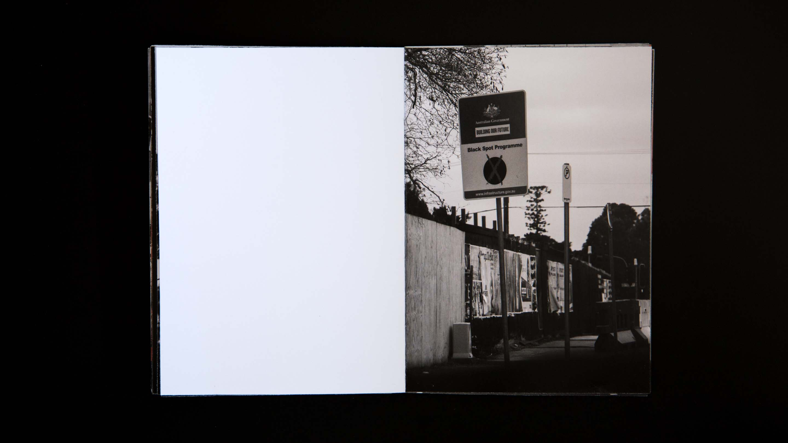
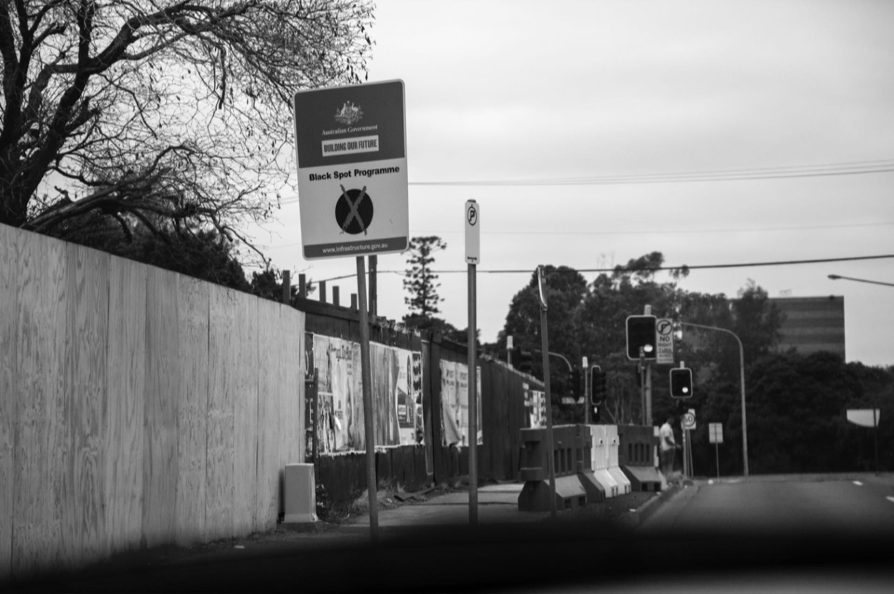
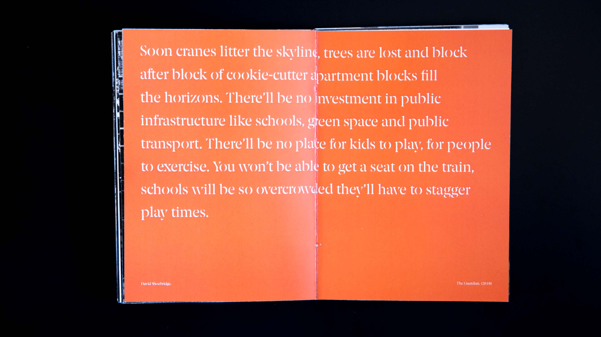
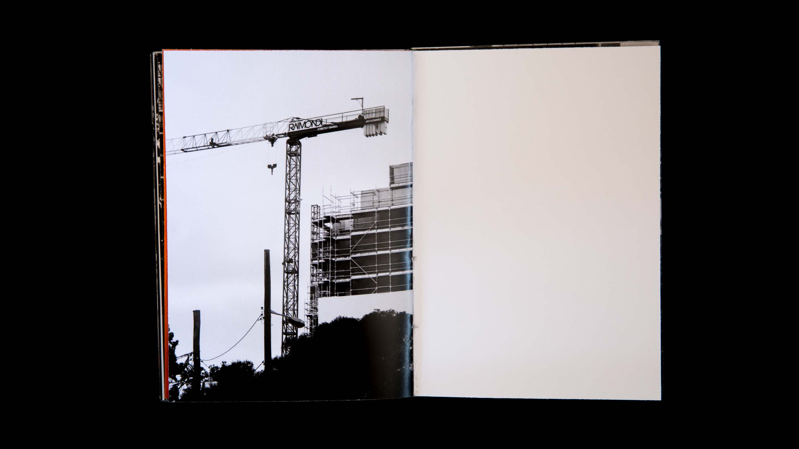
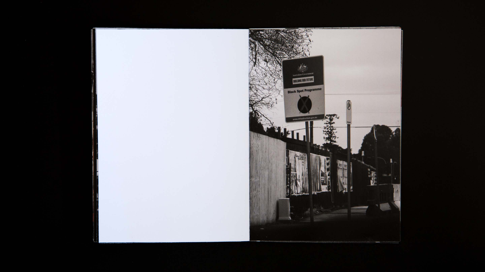
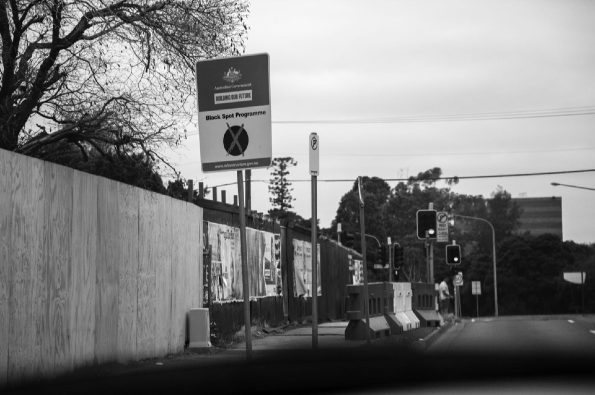
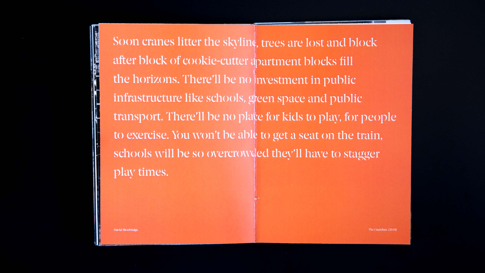
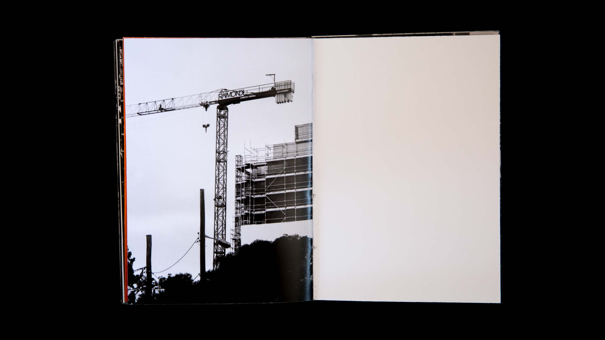

Parramatta
Shedding light on rapid urbanisation
Parramatta. Serialised with the postal code 2150, it is second oldest city in Australia and now, predicted to be Sydney’s Central City. With its rich heritage being diminished due to over-development, it is becoming a wealthy enclave confined to people paying top dollar.
Role
Designer
Team
N/A
Timeline
February 2018 - March 2018
An introduction
Growing up in Parramatta ever since I was 5 years of age, I’ve witnessed the waves and phases that it has experienced. From its humble roots, suburban identity and now, the broken city struggling to keep up with its rate of growth.
For indigenous people who lived around the banks of the river, it was a time of great feasting. Clans travelled from far away to share the food sources at Parramatta. Colonised in April 1788 by an expedition lead by Captain Arthur Phillip to find soil ideal for farming, Parramatta was described as an immense undulating grassland – a place ideal for a jail town and farm. The area soon became a flourishing settlement with jails, schools and chapels.
But these heritage sights are now crumbling. In an effort to keep up to pace with the growing population in Sydney, Parramatta was nominated as the new Sydney business district. Soon, cranes littered the sky, trees became lost in the block of cookie-cutter apartments, debris and building materials litter the streets along with the echoing sounds of heavy machinery desperately operating to transform Parramatta into a city that could be found anywhere else within the world. Little investment went into maintenance of these heritage sites, infrastructure and green spaces.
Today, they history of the town remains boarded up to stand like ghosts from the past staring out over the once undulating grassland of Parramatta river.
Typeface selection
A serif stencil typeface, a broken typeface, showcases the now disjoint nature of the city.
Faded history
I chose to incorporate some pictures and paintings of Parramatta at its earlier stages. Extracted from the council archives, this depicts the stark contrast between the then Parramatta and the now Parramatta, allowing the viewer to experience the history of the city now faded through its over-development.
 







Symbolic details
I went with a simple colour scheme, black and white photos coupled with the orange taken from the Parramatta City Council logo. The orange pays homage to the Aboriginal custodians of the land and also represents the symbolic blood dripping as the rich heritage sites within the city have been ripped out and replaced with shiny corporate sites, cleaving out the heart and soul of the city.
I increased the incidence of the orange as the pages progressed, creating a more and more chaotic feel.